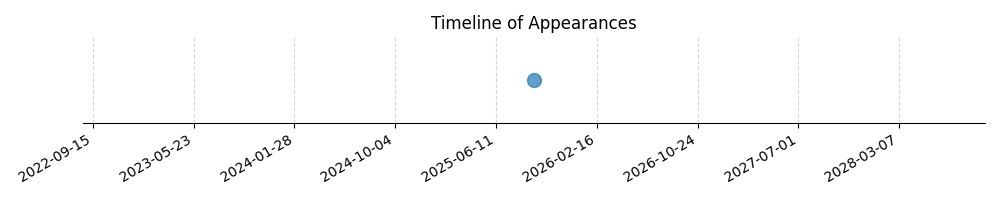

Kategorie: Letecké předpisy
V řízených vzdušných prostorech (CTR) je nezbytné používat nastavení QNH příslušného řízeného letiště pro výškoměry, aby se zajistila přesná výška nad terénem a zabránilo se kolizím. Pod převodní výškou se letí s nastavením QNH, které zajišťuje správnou referenční výšku vůči terénu.

| Datum výskytu |
|---|
| 2025-09-13 |